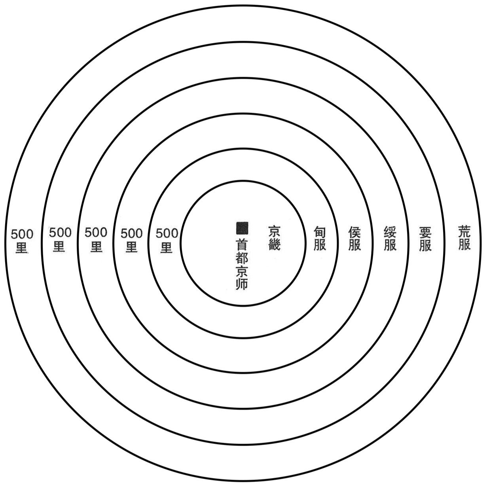
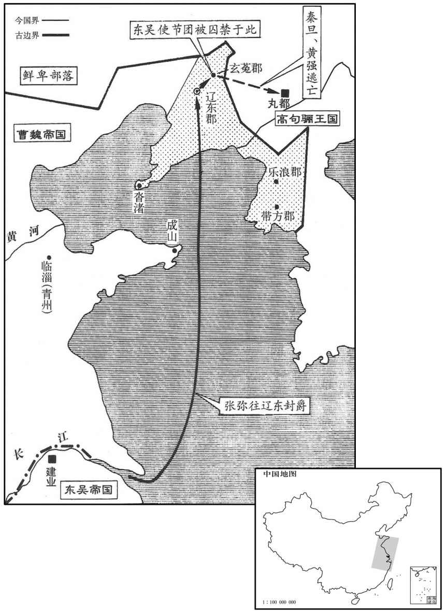
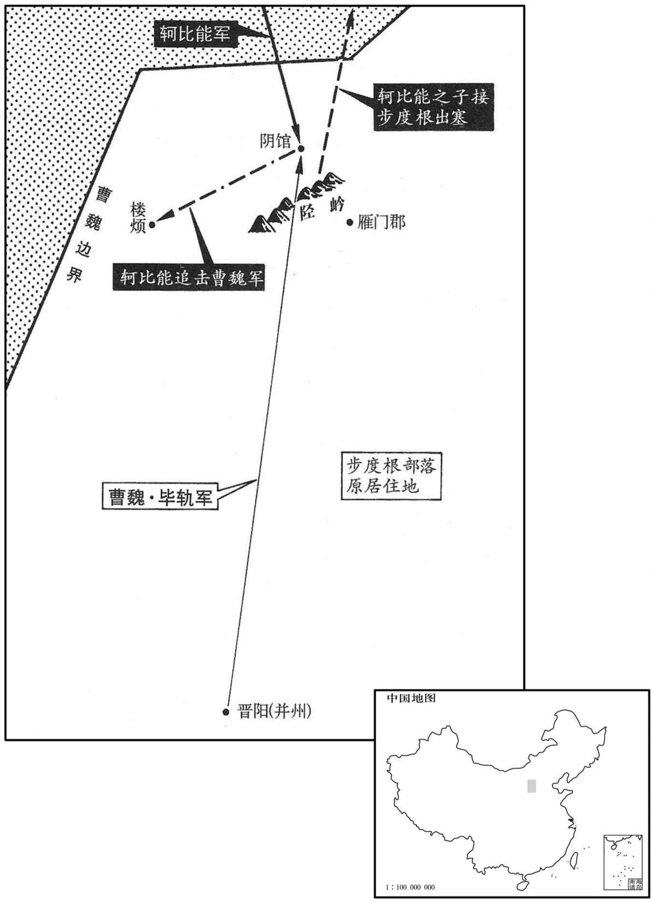

公元233年资治通鉴：本年记事、原文与白话对照
按原书编年位置阅读；追叙和史论不等于本年发生的事件。白话采用所据译本，缺译不以生成译文补齐。
卷72 · 本年记事
公元233年 · 魏烈祖明皇帝青龙元年
青龙元年〔（癸丑，二三三）〕
上传原文的注释括号有异常，字符原样保留；无法可靠划分的段落默认全文显示。
本年事件索引（现代整理）

本年形势与背景参考图

本年形势与背景参考图
春，正月，甲申，青龙见摩陂井中。二月，帝如摩陂观龙，改元。〔自是改摩陂曰龙陂。〕
春季，正月，甲申（二十三日），在摩陂中出现一条青龙。二月，明帝去摩陂观青龙，更改年号。
公孙渊遣校尉宿舒、〔姓谱：宿本风姓，伏羲之后封于宿。风俗通：汉有鴈门太守宿详。〕郎中令孙综〔晋志：王国置郎中令，渊未封王，僭置之也。〕奉表称臣于吴；吴主大悦，为之大赦。〔为，于伪翻。〕三月，吴主遣太常张弥、执金吾许晏、将军贺达将兵万人，金宝珍货，九锡备物，乘海授渊，封渊为燕王。举朝大臣自顾雍以下皆谏，以为「渊未可信而宠待太厚，但可遣吏兵护送舒、综而已；」吴主不听。张昭曰：「渊背魏惧讨，〔背，蒲妹翻。〕远来求援，非本志也。若渊改图，欲自明于魏，两使不反，〔使，疏吏翻。〕不亦取笑于不下乎！」吴主反复难昭，〔难，乃且翻。〕昭意弥切。吴主不能堪，按剑〔【章：甲穴行本「剑」作「刀」；乙十一行本同。】〕而怒曰：「吴国士人入宫则拜孤，出宫则拜君，孤之敬君亦为至矣，而数于众�之撽，〔数，所角翻。折，之舌翻。〕孤常恐失计。」〔失计，谓不能容昭而杀之也。〕昭孰视吴主〔古孰、熟字通。〕曰：「臣虽知言不用，每竭愚忠者，诚以太后临崩，呼老臣于下，遗诏顾命之言故在耳。」〔事见六十五卷汉献帝建安十二年。〕因涕泣横流；吴主掷刀于地，与之对泣。然卒遣弥、晏往。〔卒，子恤翻。〕昭〔忿言之不用，称疾示朝；〔朝，直遥翻。〕吴主恨之，土塞其门，〔塞，悉则翻。〕昭又于内以土封之。〔张昭事吴，有古大臣之节。〕
公孙渊派遣校尉宿舒、郎中令孙综携带表章赴吴称臣，吴王非常高兴，为此大赦天下。三月，吴王派遗太常张弥、执金吾许晏、将军贺达率领大军万人，携带金银财宝、奇珍异贷及九锡齐备，乘船渡海赏赐公孙渊，封公孙渊为燕王。自顾雍以下的满朝大臣都直言规劝，座为“公孙渊不可轻信，这样做，对他的恩遇太厚了，只要派遣官兵护送宿舒、孙综就够了。”吴王不接受。张昭说：“孙渊背叛魏国，害怕讨伐，从远地而来求援，绝不是他的本意。如果公孙渊改变主意，打算自动向魏表明忠心，我们的两位使节不能返回，不也让天下人取笑吗？”吴王反复驳诘张昭，张昭越发坚持己见。吴王不能忍受，按着佩剑恼怒地说：“吴国士族之人入宫则参拜我，出宫则参拜您，我敬重您已经到了极点，而您屡次在大庭广众之下顶撞我，我常常唯恐自己做出不愿做的事。”张昭看着吴王说：“我虽然知陛下不会采纳我的建议，但每次都竭尽愚忠的原因，实在是因为太后临终时呼唤我到她的床前，留下遗诏，吩咐我辅佐陛下的话音犹在耳边的缘故。”接着泪满面，吴王将刀扔在地上，与张昭相对哭泣。然而还是派遣张弥、许晏去往辽东。张昭对不采纳他的意见忿忿不平，声称有病不去朝见。吴王怨恨张昭，下令用土将张昭家的大门都住，张昭又从里面用土将门封死。
夏，五月，戊寅，北海王蕤卒。
夏季，五月，戊寅（十八日），北海王曹蕤去世。
闰月，庚寅朔，日有食之。
闰五月，庚寅朔（初一），出现日食。
六月，洛阳宫鞠室灾。〔鞠室者，画地为域以蹴鞠，因以名室。
本段缺少可靠对应白话，原文完整保留；未使用生成译文。
鲜卑轲比能诱保塞鲜卑步度根与深结和亲，〔步度根保塞，见七十卷文帝黄初五年。诱，音酉。〕自勒万骑迎其累重于陉北。〔累，力瑞翻。重，直用翻。陉，音刑。陉北，陉岭之北也，唐代州鴈门县有东陉关、西陉州。〕荆〔【章：甲穴行本「荆」作「并」；乙士行本同；孔本同。】〕州刺史毕轨表辄出军，以外威比能，内镇步度根。帝省表曰：〔省，悉景翻。〕「步度根已为比能所诱，有自疑心。今轨出军，慎勿越塞过句注也。」〔汉灵帝末，羌胡大扰定襄、云中、五原、朔方、上郡，并流徙分散。建安二十年，集塞下荒地，置新兴郡，自陉岭以北并弃之，故以句注为塞。〕比诏书到，〔比，必寐翻。〕轨已进军屯阴馆，〔应劭曰：句注，出名，在鴈门阴馆县。杜佑曰：句注山，即鴈门县西陉岭。句，伏俨音俱，包恺音钩。〕遣将军苏尚、董弼追鲜卑。轲比能遣子将千余骑迎步度根部落，与尚、弼相遇，战于楼烦，〔阴馆、楼烦二县，汉皆属鴈门郡，而晋志无之，盖弃之荒外矣。〕二将没，步度根与泄归泥部落皆叛出塞，〔泄归泥，扶罗韩之子。〕与轲比能合寇边。帝遣骁骑将军奏朗将中军讨之，〔晋职官志：骁骑将军、游击将军，并汉杂号将军也，魏置为中军。〕轲比能乃走幕北，泄归将其部众来降。步度根寻为轲比能所杀。
鲜卑首领轲比能引诱保塞鲜卑首领步度根与他深交和睦，亲自率领一万骑兵在陉北迎接步度根的人马辎重，荆州刺史毕轨上表请求马上出兵，对外威胁柯比能，对内镇压步度根。明帝审阅上表后说：“步度根已以被轲比能引诱，心虚多疑。现在毕轨也兵征讨，一定要谨慎行事，不要越过边塞句注山。”等到诏书送到，毕轨已经进军到阴馆驻屯，派遣将军苏尚、董弼追击鲜卑人。轲比能派遣儿子率领一千多骑兵迎接步度根部落，自己与苏尚、董弼遭遇，在楼烦交战。苏尚、董弼战死，步度根部落与泄归泥部落全部叛变出塞，与轲比能联合，侵犯魏边境。明帝派遣骁骑将军秦郎率中军前往征讨，轲比能逃到漠北，泄归泥率领部众归降，步度根不久就轲比能杀掉。

公孙渊知吴远难恃，乃斩张弥、许晏等首，传送京师，悉没其兵资珍宝。〔卒如张昭之言。传，直恋翻。〕冬，十二月，诏拜渊大司马，封乐浪公。〔乐浪，音洛琅。〕
公孙渊自知吴国相距遥远难以信用靠，于是斩张弥、许晏等人首级，送到京城，全部吞并了吴国的士兵及带来的金银财宝。冬季，十二月，颁诏任命公孙渊为大司马，封为乐浪公。
吴主闻之，大怒曰：「朕年六十，世事难易，靡所不尝。〔尝，试也。易，以豉翻。〕近为鼠子所前却，〔谓称臣以诱吴使同前，又既又斩其使以却之也。〕令人气踊如山。不自截鼠子头以掷于海，无颜复临万国，复，扶又翻。〕就令颠沛，不以为恨！」〔知其不可，而欲兴忿兵也。〕
吴王听到消息勃然大怒说：“腾年已六十，人世间的艰难困苦，还有什么没经历过，近来却被鼠辈所戏弄，令人气涌如山。如不亲手斩掉鼠辈的脑袋扔进大海，就再也无颜君临万国，即令为此亡国颠沛，也决不怨恨！
陆逊上疏曰：「陛下以神武之资，诞膺期运，破操乌林，〔事见六十五卷汉献帝建安十二年。〕败备西陵，〔事见六十九卷文帝黄初三年。败补迈翻。〕禽羽荆州；〔事见六十八卷建安二十四年。〕斯三虏者，当世雄杰，皆摧其锋。圣化所绥，万里草偃，〔言如风行而草偃也。〕方荡平华夏，总一大猷。〔猷，道也，谋也。夏，户雅翻。〕今不忍小忿而发雷霆之怒，违垂堂之戒，〔千金之子，坐不垂堂，以喻权不当自越海而君兵于辽东。〕轻万乘之重，〔乘，绳证翻。〕此臣之所惑也。臣闻之，行万里者不中道而辍足，图四海者不怀细而害大。强寇在境，荒服未庭，陛下乘桴远征，〔桴，芳无翻。编竹木渡水，大者曰桒，小者曰桴。〕必致窥嘱，戚至而忧，悔之无及。若使大事时捷，则渊不讨自服。今乃远惜辽东众之与马，〔谓权所以远惜辽东而不忍弃绝之者，以其民众与其地产马也。〕柰何独欲捐江东万安之本业而不惜乎！」
陆逊上书说：“陛下以神明威武的资质，生当大命，在乌林大破曹操，在西陵大败刘备，在荆州生擒关羽，这三个败虏都是当世英雄，却都被陛下摧折他们的锋芒。圣明的教化安抚四方，风行万里而小草为之倾倒，如今，正临荡平中原、统一天下之时，现在不能忍住小恨而发出雷霆万钧般怒火，是违背了‘千金之子，坐不垂堂’的古训，轻视自己为帝王的贵重身分，这是我感到惑的。我听说，行万里路的人不在中途止步，立志取得天下的人不对小事耿耿于怀而危害大局。强大的敌人压境，荒远之地还没有臣服，陛下乘船远征，必然给敌人以可乘之机，事到临头才去忧虑，恐怕后悔都来不及了。如能使国家大事及时报捷，那么分孙渊不用征讨自己就会归顺。而今陛下还恋惜远在辽东的人口和马匹，怎么单单要舍弃江东万安的根本基业而不珍惜呢？”
尚书仆射薛综上疏曰：「昔汉元帝欲御楼船，薛广德请刎颈血染车。〔事见二十八卷永光元年。刎，武粉翻。〕何则﹖水火之险至危，非帝王所宜涉也。今辽东戎貊小国，〔貊，莫百翻。〕无城隍之固，备御之术，器械铢钝，〔铢者，十分黍之重，言其轻也。〕犬羊无政，往必禽克，诚如明诏。然其方土寒埆，〔埆，克角翻，硗瘠也。〕谷稼不殖，民习鞍马，转徙无常，卒闻大军之至，自度不敌，〔卒，读曰猝。度，徒洛翻。〕鸟惊兽骇，长驱奔窜，一人匹马，不可得见，唯获空地，守之无益，此不可一也。加又洪流滉瀁，〔滉瀁，水深广貌。滉，户广翻。瀁，以两翻，又余亮翻。〕有成山之难，海行无常，风波难免，焂忽之间，人船异势，虽有尧、舜之德，智无所施，贲、育之勇，力不得设，此不可二也。〔贲，音奔。〕加以郁雾冥其上，咸水蒸其下，善生流肿，转相洿染，〔洿，乌故翻。流肿者，谓毒气下流，足为之肿，古人谓之重膇，今人谓之脚气。〕凡行海者，稀无此患，此不可三也。天生神圣，当乘时平乱，康此民物。今逆虏将灭，海内垂定，乃违必然之图，寻至危之阻，忽九州岛之固，肆一朝之忿，既非社稷之重计，又开辟以来所未尝有，期诚群僚所以倾身侧息，〔谓倾身而卧，侧鼻而息，不得展布四体，安于偃仰也。〕食不甘味，寝不安席者也。」
尚书仆射薛综上书说：“从前汉元帝想乘楼船，薛广德请求自刎，以鲜血染车来阻止。为针么？因为水火无情，至危至险，不是帝王所应北临之地。今辽东蛮戒小国，没有坚固的城堡，防御的战术，兵器轻钝，如犬、羊一般不懂治国，前去征伐必胜无疑，正如陛下诏书所言。然而其国土狭小、贫瘠严寒，庄稼不能生长，民众熟习骑马，流动无常，忽听大军来到，自量抵抗不过，如鸟惊兽骇，四散远逃，我们会连一人一马都见不到，虽然得到了这块空旷地方，但守住它毫无益处，这是不可出兵的原因之一。加之大海无际，洪流深广，已有成山之难，海上肮行变化无常，大风大浪难以避免，转 眼之间，连人带船全被吞没，即使有尧舜的德行和智慧，也无法施展，有孟贲、夏育的勇敢和力量，也不能发挥，这是不可出兵的原因之二。还有，浓郁的云雾罩在天空，咸苦的海水蒸发在下面，极易使人生脚气病，互相传染，凡在海上肮行的人，很少有人不生此病，这是不可出兵的原因之三。上天生出神明的圣人，当运用时机削平动乱，使人民康盛，社会富足。而今敌逆就要灭除，海内将要平安，却要违背既定的大政方略，自寻至危的困阻，忽视国家的安危，发泄一时的气愤，既不是有利于国家的大计，又是开天辟地以来未曾有过的举动，实在是群臣所以坐卧不安，吃饭不香，睡觉不稳的原因。”
选曲尚书陆瑁上疏曰：〔吴选曹尚书，即魏选部尚书。瑁，音冒。」北寇与国，壤地连接，苟有间隙，〔间，古苋翻；下同。〕应机而至。夫所以为越海求马，曲意于渊者，为赴目前之急，除腹心之疾也。〔为，于伪翻。〕而更弃本追末，捐近治远，〔治，直之翻。〕忿以改规，激以动众，斯乃猾虏所愿闻，非大之吴至计也。〔北寇、猾虏，皆谓魏也。〕又兵家之术，以功役相疲，劳逸相待，得，失之间，所觉辄多。〔兵法：以逸待劳，又曰：逸则能劳之。言敌人用智以疲我，苦不自觉，比我觉知，则得失之间相去多矣。〕且沓渚去渊，道里尚远，〔辽东郡有沓氏县，西南临海渚。应劭曰：沓，长答翻。又据陈寿志：景初三年，以辽东东沓县吏民渡海，居齐郡界为新沓渚之民也。〕今到其岸，兵势三分，使强者进取，次当守船，又次运粮，行人虽得悉用。加以单步负粮，经远深入，贼地多马，邀截无常。若渊狙诈，与北未绝，动众之日，唇齿相济；〔此虑魏乘吴伐辽门而南侵也。狙，千余翻。〕若实了然无所凭赖，〔了然，犹言晓然也。蜀本作「孑然」，文义尤长。孑，孤孑也。谓渊孤立孑然无援也。〕其畏怖远迸，或难卒灭，〔怖，普布翻。迸，北孟翻。卒，读曰猝。〕使天诛稽于朔野，山虏乘间而起，〔山虏，谓丹杨、豫章、鄱阳、庐陵、新都寺郡山越也。「乘」蜀本作「承」。间，古苋翻。〕恐非万安之长虑也！」吴主未许。
选曹尚南瑁上书说：“北方的魏与我国土地相接，如果稍有空隙，就会乘机而入。我们所以要渡越大海，求购马匹，违心结交孙渊的原因，是为解决眼前的马荒之急，除掉魏这一心腹之患。现在反而要舍本求末，舍近求远，因一时气忿改变规划，一时激动兴师动众，这才是狡猾的敌人愿意听到的，而绝不是我大吴最好计策。还有，兵家战术，在于使敌人疲劳，以逸待劳，得失之间，察觉与不察觉则大不相同，况且沓渚县离公孙渊路途还很遥远，如大军到达，也要把兵力一分为三，让体格强壮的士兵向前进攻，稍差的守卫船舰，最差的运送粮食。大军人数虽然很多，但难以全部用上。加之靠步行背粮，长途跋涉深入故境，那一带战马众多，能够随时截击我们。如果公孙渊狡猾奸许，与魏并未断绝关系，我们大军出动之日，他们就会如同唇齿，互相援助；如果确实孤立无援，因为惧怕而远逃，或许也难很快消灭，我们对他的惩罚及于北方荒野，而国内的山越叛民乘机四起，这恐怕也不是万全的长久这策。”吴王没有同意。
瑁重上疏曰：〔重，直龙翻。〕「夫兵革者，固前代所以诛暴乱、威四夷也。然其役皆在奸雄已除，天下无事，从容庙堂之上，从，千容翻。〕以余议议之耳。至于中夏鼎沸，九域盘互之时，〔盘互，谓各盘据而互为敌也。夏，户雅翻。〕率须深根固本，爱力惜费，未有正于此时舍近治远，以疲军旅者也。〔舍，读曰舍。治，直之翻。〕昔尉佗叛逆，僭号称帝，于时天下乂安，百姓康箪，然汉文犹以远征不易，告喻而已。〔佗，徒河翻。事见十二卷汉文帝元年。易，以豉翻。〕今凶桀未殄，疆埸犹警，〔埸，音亦。未宜以渊为先。愿陛下抑威任计，暂宁六师，潜神嘿规，以为后图，天下幸甚！」吴主乃止。
陆瑁再次上书说：“战争，固然中古代用来诛杀暴乱、威镇四方蛮夷的行动。然而战事要在奸雄已经灭除，天下太平无事，在朝廷之上从从容容地充分讨论之后才可进行。至于在中原战乱不断，九州之地各自盘踞相互为敌之时，大都须将本国的根本大业加深加固，爱护人力，珍惜财物，没有偏在这时舍近治远，使军队疲的，从前尉佗叛逆，僭号称帝，当时天下太平，百姓安居富足，可是汉文帝仍然认为出兵远征并不容易，只是派陆贾前去劝喻而已。而今首恶元凶还未消灭，边境地区不断报警，不宜先去讨伐公孙渊。愿陛下抑制盛怒，任用计谋，暂息六军，秘密策划，以后再去图取，则天下万幸！”吴王这才罢休。
吴主数遣人慰谢张昭，〔数，所角翻。〕昭固不起。吴主因，出过其门呼昭，〔过，工禾翻。〕昭辞疾笃。吴主烧其门，欲以恐之，〔恐，丘共翻。〕昭亦不出。吴主使人灭火，住门良久，昭诸子共扶昭起，吴主载以还宫，深自得已，然后朝会。〔朝，直遥翻。〕
吴王多次派人慰问张昭，向他道歉，张昭始终不出来。吴王有次出宫，经过张昭家门呼唤他，张昭声答病重。吴王让人火烧张昭家门，想要恐吓张昭，张昭也不出来。吴王便让人把火来掉，在门中长时间等侯，张昭几个儿子一齐扶张昭起床，吴王自己的车把他拉回宫，深切地责备自己，张昭不得已，然后参加朝会。
初，张弥、许晏等至襄平，〔襄平县，辽东郡治所，渊所都也。〕公孙渊欲图之，乃先分散其吏兵，中使秦旦、张群、杜德、黄强等及吏兵六十人置玄菟。〔中使，中节人使也。使，疏吏翻。陈寿曰：汉武帝开玄菟郡，鈶沃沮城；后为夷貊所侵，徙郡句骊西北。菟，同都翻。〕玄菟在辽东北二百里，〔此非玄菟郡旧治也。〕太守王赞领户二百，旦等皆舍于民家，仰其饮食，〔仰，牛向翻。〕积四十许日。旦与群等议曰：「吾人远辱国命，自弃于此，与死无异。今观此郡，形势甚弱，若一旦同心，焚烧城郭，杀其长吏，为国报耻，〔长，知两翻。为，于伪翻。〕然后伏死，足以无恨。孰与偷生苟活，长为囚虏乎！」群等然之。于是阴相结约，当用八月十九日夜发，其日中时，为邵中张松所告，赞便会士众，闭城门，旦、群、德、强皆踰城得走。时群病疽疮着彣，疽，千余翻。着，直略翻。彣，与膝同。〕不及辈旅，德常扶接与俱，崎岖山谷，〔崎丘宜翻。岖，音区。〕行六七百里，创益困，不复能前，创，初良翻；下同。〕卧草中，相守悲泣。群曰：「吾不幸创甚，死亡无日卿诸人宜速进道，冀有所达，空相守俱死于穷谷之中，何益也！」德曰：德曰：「万里流离，死生共之，不忍相委。」〔委，弃也。〕于是推旦、强使前，〔推，吐雷翻。〕德独留守群，采菜果食之。〔食，读曰坔。〕旦、强别数日，得达句丽，因宣吴主诏于句丽王位宫及其主簿，〔高句丽国，在辽东之千里。位宫，汉高句丽王宫之曾孙也。宫生而开目能视，及长，勇壮，数犯汉边。位宫生堕地，亦能开目视人。句丽呼相似为「位」以似其祖，故名曰位宫。句丽有相加、对卢、沛者、古邹大加、主簿、优台、使者、帛衣、先人。「帛衣」，三国志作「皁衣」。句，音如字，又音驹。骊，力知翻。〕绐言有赐，为辽东所劫夺。〔绐，徒亥翻。〕位宫等大喜，即受诏，命使人随旦还迎群，〔【章：甲十六行本「群」下有「德」字；乙十一行本同。】〕遣皁衣二十五人，送旦等还吴，奉表称臣，贡貂皮千枚，鹖鸡皮十具。〔郭璞注山海经曰：鹖然似雉而大，青色，有毛，敌死乃止。鹖，何葛翻。〕旦等见吴主，悲喜不能自胜。〔胜，音升。〕吴主壮之，皆拜校尉。
最初，张弥、许晏等到达辽东襄平，公孙渊打算消灭他们，于是拆散他们的官兵，把中使秦旦、张群、杜德、黄强等及宫兵六十人安置在玄菟。玄菟在辽东以北二百里，太守王赞管辖二百户人家。秦旦等都居住在民家，靠他们供给饮食，住了四十多天。秦旦与张群等商议说：“我们远在异域，辜负了使命，被弃于此地，与死无异。现观察此郡，防守十分薄弱，如果我们一旦齐心，放火焚烧城廓，杀死他们的官吏，为国家报仇雪耻，然后一死，也足以无恨了。这比苟且偷生，长久地做囚犯活着怎么样！”张群等都赞成。于是暗中相互 约定，当在八月十九日夜里起事。那天中午，被郡中人张松告密，王赞便集合起部众，关闭城门，秦旦、张群、杜德、黄强全都爬过城墙逃出。当时张群膝盖生疮，跟不上别人，杜德常常搀扶照应他一起走，山路程崎岖不平，走出六七百里，伤势更加严重，不能再向前走，躺在草丛中，互相守悲伤流泪。张群说：“我不幸伤得厉害，离死没儿天了，你们几位应该加紧向前赶路，指望有个去处，白白地守着我都会死在深山穷谷之中，有什么益处！”杜德说：“万里流离，生死与共，怎么能忍心抛弃你！”于是推出秦旦、黄强在前先行，杜德一人留守张群，采集野菜、山果给他吃。秦旦、杜德离开了几天，到达高句丽国，随机宣称吴王给高句丽王位宫及其主簿颁下 诏书，谎称赏有赐品，都被辽东所劫掠。位宫等非常高兴，随即受诏，下令使人跟随秦旦返回迎接张群，又派遣差役二十五人，护送秦旦等返回吴国，上表称臣，进贡貂皮一千张，鸡皮十件。秦旦等见到吴王，悲喜交集，不能自制，吴王也被他们感动，都提升为校尉。
是岁，吴主出兵欲围新城，〔合肥新城也。〕以其远水，积二十余日，不敢下船。〔大船向岸，船高岸卑，故谓舍船就岸曰下船，以自船而下也。远，于愿翻。〕汉宠谓诸将曰：「孙权得吾移城，必于其众中有自大之，言今大举来欲要一切之功，〔要，不遥翻。〕虽不敢至，必当上岸耀兵以示有余。」〔上，时掌翻。乃潜遣步骑六千，伏冒水隐处以待之。吴主果上岸耀兵，宠犬兵卒起击之，〔卒，读曰猝。〕斩首数百，或有赴水死者。吴主使全琮攻六安，亦不克。
两版字句有差异，建议核对原文。
这一年，吴王出动大军打算围攻新城，但因远离水域，停泊二十多天，不敢下船上岸。满宠对将领们说：“孙权得知我们迁移城址，必定在他的部众中说了狂妄自大的话，如今大举出兵而来，是想求得一时之功，虽然不敢到城前攻击，也必当上岸炫耀武力，显示实力有余。”于是秘密派遣步、骑兵六千人，埋伏在肥水隐蔽的地方等待。吴王果然率军上岸炫耀，满宠伏兵突然起而袭击，斩杀吴兵数百，吴兵中也有跳入水中淹死的。吴王又派全琮攻打六安，也没能攻下。
蜀庲降都督张翼〔水经注：宁州建宁县，故庲降都督屯，蜀后主建兴三年，分益州郡置之。〕用法严峻，南夷豪帅刘胄叛。〔帅，所类翻。〕丞相亮以参军巴西马忠代翼，召翼令还。其人谓翼宜速归即罪。〔其人，谓召翼者也。即，就也。〕翼曰：「不然，吾以蛮夷蠢动，不称职，故还耳。〔称，尺证翻。〕然代人未至，吾方临战场，当运粮积谷，为灭贼之资，岂可以黜退之故而废公家之务乎！」于是统摄不懈，〔懈，古隘翻。〕代到乃发。马忠因其成基，破胄，斩之。
蜀国降都督张翼执法严峻，南方夷人首领刘胄起兵叛乱。丞相诸葛亮命参军巴西人马忠接替张翼，调张翼返回。他的部下告诉张翼应即速返归接受处罚，张翼说：“不对，我是因为蛮夷叛乱，没有能力平息，因此被召回。可是，接替我的人还没有到达，而我正身临战场，应当转运粮食积存谷米，作为消灭叛敌的资本，怎么可以因罢黜的缘故而使国家的军务荒废呢？”于是统筹兼理毫不松懈，马忠抵达后才出发返回。马忠利用张翼打下的基础，击败刘胄，并杀了他。
诸葛亮劝农讲武，作木牛、流马，〔亮集日：流马尺寸之数，肋长三尺五寸，广三寸，厚二寸二分，左右同前轴孔分墨去头四寸，径中二寸。前脚孔分墨去前轴孔四寸五分，广一寸。前杠孔分墨去前脚孔分墨三寸七分，孔长二寸，广一寸。后轴孔去前杠孔分黑一尺五分，大小与前同。后脚孔刀墨去后轴孔三寸五分，大小与前同。后杠孔去后脚孔分墨二寸七分，后载去后杠孔分墨四寸五分。前杠长一尺八寸，广二寸，厚一寸五分；后杠与等。板方，襄一板厚八分，长二尺七寸，高一尺六寸五，广一尺六寸。每枚受米二斛三斗，从上杠孔去肋下七寸，前后同。上杠孔去下杠孔分墨一尺三寸，孔长一寸五分，广七分，八孔同。前后四脚广二寸，厚一寸五分。形制如象靬，长四寸，径面困寸三分，孔径中二脚杠长二尺一寸，广二寸五分，厚一寸四分，同杠耳。〕运米集斜谷口，治斜谷邸阁；息民休士，三年而后用之。〔按明年亮即出料谷，所谓「息民休士，三年而后用之」，通自再攻祁山之后，至是凡三年也。斜，昌遮翻。谷，音浴，又古禄翻。
本段缺少可靠对应白话，原文完整保留；未使用生成译文。
译本中未与胡注本可靠对应的内容
以下另列供核对版本差异，不并入胡注本正文。
译本所附古文
[5]六月，洛阳宫鞠室灾。
译本白话
六月，洛阳宫鞠室发生火灾。
译本所附古文
[10]诸葛亮劝农讲武，作木牛、流马，远米集斜谷口，治斜谷邸阁；息民休士，三年而后用之。
译本白话
诸葛亮鼓励发展农业，训练军队，制作木牛、流马为运载工具，运粮集存在斜谷口，修整斜谷屯积军粮和物资的仓库；百姓和士兵得以休息，前后三年，才动用他们。